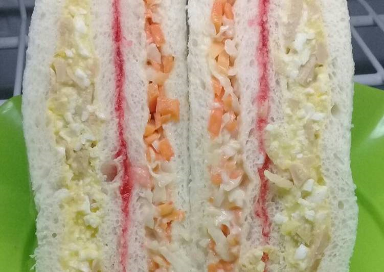
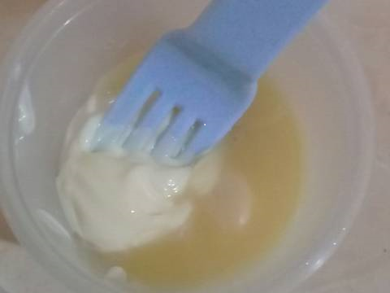
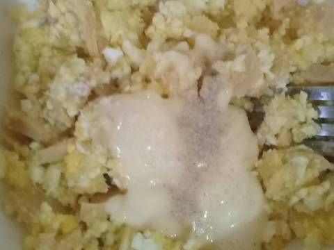
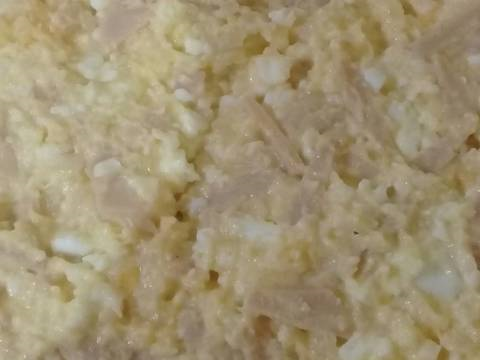
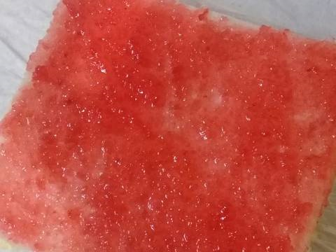
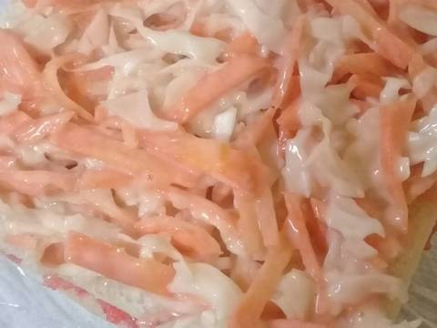
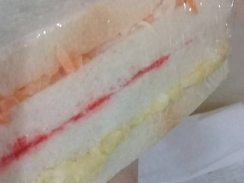
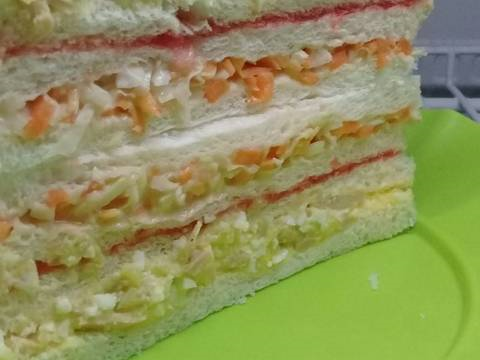

RESEP SANDWICH

Bahan-bahan :
1. 4 lembar roti tawar
2. 1 sdm selai stroberi
3. Saus creamy :
4. 3 sdm mayones
5. 1-2 sdm skm
Bahan lapis A :
1. 1 butir telur rebus
2. 1 buah kentang rebus
3. 1 buah sosis
4. Sejumput garam,merica
Bahan lapis B :
1. 1/2 buah wortel
2. 1 sdm saus tomat
3. Secukupnya kol
Langkah Langkah
- Buat saus creamy campur dalam wadah mayones dan skm..lalu sisihkan.nanti di bagi 2 ya

- Rebus telur dan kentang, setelah matang hancurkan pake garpu, campur dengan sosis yg telah di iris kecil..
lalau tambahkan saus creamy tadi bersama garam merica.isian yg paling saya suka

- Iris2 kol dan wortel lalu cuci bersih..campurkan bersama saos tomat dan saus creamy
- Ambil roti kemudian ratakan isian yg pertama yaitu campuran telur dan kentang

- Tumpuk lagi dengan roti dan olesi selai stroberri

- Tumpuk lagi dengan roti lalu masukan salad

- Kemudian tutup lagi dengan roti, bungkus dengan cling wrap.simpan dalam kulkas 10 menit

- Potong menjadi 2 berbentuk segitiga..sajikann...
